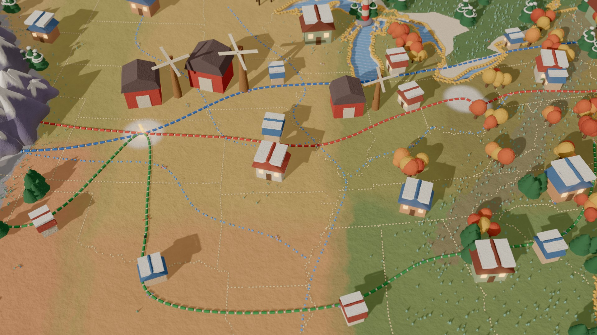
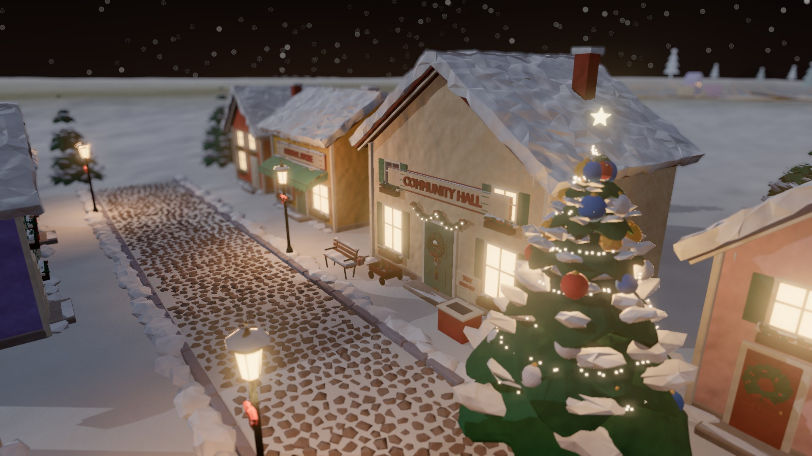

<!doctype html>
<html lang="en">
<head>
<meta charset="utf-8">
<meta name="viewport" content="width=device-width, initial-scale=1">
<title>Milestone 2 UX Concepts</title>
<!-- Static visual concepts only (no behaviour), drawn over real renders of the current felt map (render.js) and the
     existing story stills (web/national/assets/story). Open with ?s=<screen id> (see SCREENS at the bottom); serve the
     repository root so both folders resolve. Text is the prototype's existing draft copy and fictional test campaign. -->
<link rel="preconnect" href="https://fonts.googleapis.com">
<link rel="stylesheet" href="https://fonts.googleapis.com/css2?family=Fraunces:ital,opsz,wght@0,9..144,500;0,9..144,600;1,9..144,500&family=Atkinson+Hyperlegible:wght@400;700&display=swap">
<style>
  :root {
    --board: #15122a; --ink: #f6ecda; --muted: #d6c8b0;
    --paper: #f4e9d2; --paper-2: #e9d8b6; --ink-d: #2a2017; --ink-m: #6b5a47; --stitch: rgba(122, 86, 48, 0.55);
    --gold: #f2b85c; --holly: #c4372c; --on-holly: #fff8ee; --pine: #2f5d46; --ok: #2f6b3f;
    --display: "Fraunces", Georgia, serif; --body: "Atkinson Hyperlegible", system-ui, sans-serif;
  }
  * { box-sizing: border-box; }
  html, body { margin: 0; height: 100%; }
  body { background: var(--board); color: var(--ink); font: 400 15px/1.45 var(--body); overflow: hidden; position: relative; }
  .abs { position: absolute; }
  img.bg { position: absolute; display: block; object-fit: cover; }
  /* ---------------------------------------------------------------- materials from the world, not website cards */
  .paper { background: var(--paper); color: var(--ink-d);
           background-image: radial-gradient(rgba(90, 60, 30, 0.05) 1px, transparent 1.2px); background-size: 5px 5px;
           border-radius: 14px; outline: 1.5px dashed var(--stitch); outline-offset: -6px; }
  .lift { filter: drop-shadow(0 10px 18px rgba(0, 0, 0, 0.45)) drop-shadow(0 2px 3px rgba(0, 0, 0, 0.3)); }
  .ticket { -webkit-mask: radial-gradient(circle 9px at 0 var(--notch), #0000 97%, #000) left / 51% 100% no-repeat,
                          radial-gradient(circle 9px at 100% var(--notch), #0000 97%, #000) right / 51% 100% no-repeat; }
  .perf { border: 0; border-top: 2px dotted rgba(122, 86, 48, 0.45); margin: 0; }
  .kick { font: 700 10.5px/1.2 var(--body); letter-spacing: 0.11em; text-transform: uppercase; color: var(--ink-m); }
  .kick.light { color: var(--gold); }
  .serif { font-family: var(--display); }
  .proto { font: 700 9.5px/1 var(--body); letter-spacing: 0.1em; text-transform: uppercase; color: #2a1606; background: var(--gold); padding: 4px 6px; border-radius: 4px; }
  .tag { display: inline-block; font: 700 9.5px/1 var(--body); letter-spacing: 0.08em; text-transform: uppercase; color: #2a1606; background: var(--gold); padding: 3px 6px; border-radius: 4px; rotate: -2deg; outline: 1px dashed rgba(42, 22, 6, 0.45); outline-offset: -3px; vertical-align: 2px; white-space: nowrap; }
  .tag.ghost { background: rgba(21, 18, 42, 0.62); color: var(--ink); outline-color: rgba(246, 236, 218, 0.35); rotate: 0deg; }
  .red { display: inline-flex; align-items: center; justify-content: center; gap: 8px; background: var(--holly); color: var(--on-holly); border-radius: 999px; font-weight: 700; padding: 11px 18px; white-space: nowrap;
         box-shadow: inset 0 -2px 0 rgba(0, 0, 0, 0.18); outline: 1.5px dashed rgba(255, 240, 220, 0.45); outline-offset: -5px; }
  .line-btn { display: inline-flex; align-items: center; justify-content: center; gap: 7px; border: 1.5px solid rgba(122, 86, 48, 0.5); color: var(--ink-d); border-radius: 999px; font-weight: 700; padding: 9px 15px; white-space: nowrap; }
  .glass { display: inline-flex; align-items: center; justify-content: center; gap: 7px; background: rgba(21, 18, 42, 0.55); border: 1px solid rgba(246, 236, 218, 0.28); color: var(--ink); border-radius: 999px; font-weight: 700; padding: 8px 14px; white-space: nowrap; backdrop-filter: blur(6px); }
  .round { width: 44px; height: 44px; border-radius: 50%; display: inline-grid; place-items: center; font-size: 19px; font-weight: 700; }
  .field { background: #fffaf0; color: #8a7a64; border-radius: 12px; border: 1.5px solid rgba(122, 86, 48, 0.35); font: 700 16px/1 var(--body); letter-spacing: 0.04em; display: flex; align-items: center; padding: 0 14px; }
  .field.focus { border-color: var(--holly); box-shadow: 0 0 0 3px rgba(196, 55, 44, 0.22); color: var(--ink-d); }
  .caret { display: inline-block; width: 2px; height: 20px; background: var(--holly); margin-left: 2px; }
  .ok { color: var(--ok); font-weight: 700; font-size: 13.5px; }
  .link { color: var(--holly); font-weight: 700; text-decoration: underline; text-underline-offset: 3px; }
  .link.light { color: var(--gold); }
  .fine { font-size: 12px; color: var(--ink-m); }
  .scrim-top { position: absolute; inset: 0 0 auto; background: linear-gradient(rgba(14, 11, 28, 0.78), rgba(14, 11, 28, 0)); }
  .scrim-bot { position: absolute; inset: auto 0 0; background: linear-gradient(rgba(14, 11, 28, 0), rgba(14, 11, 28, 0.82) 45%, rgba(14, 11, 28, 0.94)); }
  .shadowtext { text-shadow: 0 1px 10px rgba(0, 0, 0, 0.85), 0 0 2px rgba(0, 0, 0, 0.6); }
  /* map labels: in-world felt tags */
  .lbl { position: absolute; translate: -50% -100%; white-space: nowrap; border-radius: 999px; font-weight: 700; box-shadow: 0 6px 16px rgba(0, 0, 0, 0.45); }
  .lbl::after { content: ""; position: absolute; left: 50%; bottom: -6px; translate: -50% 0; border: 6px solid transparent; border-bottom: 0; }
  .lbl.tt { background: var(--paper); color: var(--ink-d); padding: 7px 13px; font-size: 14px; outline: 1.5px dashed var(--stitch); outline-offset: -4px; }
  .lbl.tt::after { border-top-color: var(--paper); }
  .lbl.tt b { color: var(--holly); }
  .lbl.cw { background: var(--holly); color: var(--on-holly); padding: 5px 11px; font-size: 12.5px; }
  .lbl.cw::after { border-top-color: var(--holly); }
  .lbl.below { translate: -50% 0; } .lbl.below::after { bottom: auto; top: -6px; border: 6px solid transparent; border-top: 0; border-bottom-color: var(--holly); }
  /* progress */
  .seg { display: flex; gap: 5px; } .seg i { display: block; height: 4px; border-radius: 2px; background: rgba(246, 236, 218, 0.3); }
  .seg i.done { background: var(--gold); } .seg i.cur { background: var(--gold); box-shadow: 0 0 0 2px rgba(242, 184, 92, 0.25); }
  /* generic numeric keypad (a stand-in for the phone's own keyboard) */
  .kbd { position: absolute; inset: auto 0 0; height: 290px; background: #cfd3da; display: grid; grid-template-columns: repeat(3, 1fr); gap: 7px; padding: 8px 6px 40px; }
  .kbd b { background: #fbfbfc; border-radius: 6px; display: grid; place-items: center; font: 400 24px var(--body); color: #111; box-shadow: 0 1px 0 #8e9196; }
  .kbd b.dim { background: transparent; box-shadow: none; }
  /* storybook */
  .page { background: #f6ecd6; color: var(--ink-d);
          background-image: radial-gradient(rgba(90, 60, 30, 0.045) 1px, transparent 1.2px), linear-gradient(90deg, rgba(90, 60, 30, 0.12), rgba(90, 60, 30, 0) 6%);
          background-size: 5px 5px, 100% 100%; }
  .dropcap::first-letter { float: left; font: 600 54px/0.82 var(--display); color: var(--holly); margin: 6px 8px 0 0; }
  .tabs { display: flex; flex-direction: column; gap: 6px; }
  .tabs span { display: grid; place-items: center; width: 34px; height: 44px; border-radius: 0 8px 8px 0; background: var(--paper-2); color: var(--ink-m); font: 700 14px var(--display); box-shadow: 2px 2px 4px rgba(0, 0, 0, 0.25); outline: 1px dashed var(--stitch); outline-offset: -4px; }
  .tabs span.cur { width: 44px; background: var(--holly); color: var(--on-holly); }
  .tabs span.done { background: #e2c98f; color: var(--ink-d); }
  .htabs { display: flex; gap: 6px; } .htabs span { display: grid; place-items: center; height: 26px; min-width: 34px; padding: 0 8px; border-radius: 8px 8px 0 0; background: var(--paper-2); color: var(--ink-m); font: 700 13px var(--display); outline: 1px dashed var(--stitch); outline-offset: -4px; }
  .htabs span.cur { background: var(--holly); color: var(--on-holly); } .htabs span.done { background: #e2c98f; color: var(--ink-d); }
  .corner { width: 54px; height: 54px; display: grid; place-items: center; font-size: 20px; font-weight: 700; }
  .corner.next { background: linear-gradient(135deg, transparent 50%, var(--holly) 50%); color: var(--on-holly); place-items: end; padding: 0 8px 6px 0; border-radius: 0 0 6px 0; }
  .corner.back { background: linear-gradient(225deg, transparent 50%, #e2c98f 50%); color: var(--ink-d); place-items: end start; padding: 0 0 6px 8px; border-radius: 0 0 0 6px; }
  /* the four-steps railroad (storybook) */
  .rail { position: relative; height: 34px; }
  .rail::before { content: ""; position: absolute; left: 10px; right: 10px; top: 15px; border-top: 3px dashed var(--stitch); }
  .rail .st { position: absolute; top: 4px; width: 24px; height: 24px; border-radius: 50%; background: var(--paper); border: 2px solid var(--stitch); display: grid; place-items: center; font: 700 12px var(--body); color: var(--ink-m); translate: -50% 0; }
  .rail .st.done { background: #e2c98f; border-color: #b38a3e; color: var(--ink-d); }
  .rail .st.cur { background: var(--holly); border-color: var(--holly); color: var(--on-holly); width: 28px; height: 28px; top: 2px; }
  /* the felt sign over a scene (cinematic step beats) */
  .sign { position: absolute; translate: -50% 0; text-align: center; }
  .sign .str { width: 2px; height: 26px; margin: 0 auto; background: repeating-linear-gradient(#8b6b45 0 3px, transparent 3px 5px); }
  .sign .plate { background: var(--paper); color: var(--ink-d); padding: 9px 14px 10px; border-radius: 10px; outline: 1.5px dashed var(--stitch); outline-offset: -5px; box-shadow: 0 8px 18px rgba(0, 0, 0, 0.45); rotate: -2deg; }
  .sign .num { font: 600 26px/1 var(--display); color: var(--holly); }
  .sign .t { font: 700 12px/1.2 var(--body); letter-spacing: 0.05em; text-transform: uppercase; }
  .dim { position: absolute; inset: 0; background: rgba(14, 11, 28, 0.42); }
  .blur { filter: blur(3px) saturate(0.85) brightness(0.72); }
  .glow { position: absolute; border-radius: 50%; background: radial-gradient(rgba(255, 214, 140, 0.85), rgba(255, 190, 90, 0.25) 45%, transparent 70%); translate: -50% -50%; }
</style>
</head>
<body>
<script>
// ------------------------------------------------------------------ content: existing prototype text only
const C = {
  name: 'Copper Wash Toy Drive', zip: '00201', area: 'Copper Wash and the canyon communities', based: 'Copper Wash, Arizona',
  fictional: 'Fictional campaign for testing. Its link goes to example.org, a placeholder address.',
  invite: 'Discover how toys travel from neighbors to families.',
  zipIntro: 'Enter your ZIP code to connect with Toys for Tots in your community.',
  ch: ['What is Toys for Tots?', 'How does it work?', 'How do I request toys?', 'How can I help?'],
  welcome: ['Welcome to Toy Town.', 'A small town that shows how a big idea works.'],
  help: 'If your family needs help this holiday season, your local Toys for Tots campaign may be able to help.',
  steps: [
    ['Find your local campaign', 'Search your ZIP code to find the campaign that serves your area.'],
    ['Read its instructions', 'Check who it serves, what to have ready, and its deadlines.'],
    ['Apply through the campaign', 'Follow its own application process on its website.'],
    ['Hear about next steps', 'If your request is approved, the campaign tells you how and when gifts are shared.'],
  ],
  stepNote: 'Each campaign sets its own process and dates. Requests aren’t made on this site.',
  finale: 'Every community has a part to play. Find yours.',
};
// stand-in stills for the four step beats: existing images only (a sign drawn over them carries the step)
const STEP_SCENE = [['country.jpg', '42% 50%'], ['mh_community.jpg', '78% 45%'], ['tt_village.jpg', '52% 60%'], ['tt_village.jpg', '88% 48%']];
const STILL = '../../../web/national/assets/story/';
const S = new URLSearchParams(location.search).get('s') || 'LA_1';
const h = (html) => { const t = document.createElement('template'); t.innerHTML = html.trim(); return t.content.firstChild; };
const add = (html, parent = document.body) => parent.appendChild(h(html));
const W = () => innerWidth, H = () => innerHeight;
let A = null;
function map(name, x = 0, y = 0, { tt = true, cw = false, cls = '' } = {}) {
  const a = A[name];
  add(``);
  const ok = (p) => p && p.x > 30 && p.x < a.w - 30 && p.y > 40 && p.y < a.h - 10;
  if (tt && ok(a.toytown)) add(`<div class="lbl tt" style="left:${x + a.toytown.x}px;top:${y + a.toytown.y - 6}px"><b>★</b> Toy Town</div>`);
  if (cw && a.campaign) add(`<div class="lbl cw below" style="left:${x + a.campaign.x}px;top:${y + a.campaign.y + 22}px">Copper Wash</div>`);
  return a;
}
const still = (file, focus, x, y, w, h, cls = '') => add(``);
const seg = (cur, n = 4, w = 22) => `<span class="seg">${Array.from({ length: n }, (_, i) => `<i class="${i < cur ? 'done' : i === cur ? 'cur' : ''}" style="width:${w}px"></i>`).join('')}</span>`;
const kbd = () => add(`<div class="kbd">${['1', '2', '3', '4', '5', '6', '7', '8', '9', '', '0', '⌫'].map((k) => `<b class="${k ? '' : 'dim'}">${k}</b>`).join('')}</div>`);
const rail = (cur, w) => `<div class="rail" style="width:${w}px">${[0, 1, 2, 3].map((i) => `<span class="st ${i < cur ? 'done' : i === cur ? 'cur' : ''}" style="left:${12 + i * (w - 24) / 3}px">${i + 1}</span>`).join('')}</div>`;
const campaignCard = ({ change = true, width = '100%' } = {}) => `
  <div style="width:${width}">
    ${change ? `<div style="display:flex;align-items:center;gap:8px;font-size:13px;color:var(--ink-m)">Your local campaign · ZIP <b style="color:var(--ink-d)">${C.zip}</b> · <span class="link">Change</span></div>` : ''}
    <p class="serif" style="margin:6px 0 2px;font-size:21px;font-weight:600;line-height:1.15">${C.name} <span class="tag">Test data</span></p>
    <p class="ok" style="margin:2px 0 12px">✓ Serves ZIP code ${C.zip}</p>
    <span class="red" style="width:100%;padding:13px 18px;font-size:16px">Visit Campaign Website ↗</span>
    <p class="fine" style="margin:9px 0 0;display:flex;justify-content:space-between"><span class="link" style="color:var(--ink-m)">Details</span><span>Fictional · example.org link</span></p>
  </div>`;

const screens = {
  // ================================================================ EXPLORATION A — MOBILE LANDING
  // ---------------------------------------------- Direction A: map-first, a ticket docked at the bottom
  LA_1() {   // landing
    map('pA_land', 0, -40);
    add(`<div class="scrim-top" style="height:120px"></div>`);
    add(`<div class="abs" style="top:14px;left:16px;right:16px;display:flex;align-items:center;gap:8px">
      <span class="serif shadowtext" style="font-size:18px;font-weight:600;white-space:nowrap">Railroad of Hope</span><span class="proto">Prototype</span>
      <span class="glass" style="margin-left:auto;height:40px">Ways to help</span></div>`);
    add(`<span class="abs glass round" style="right:16px;bottom:262px;width:38px;height:38px;font-size:15px;font-family:var(--display);font-style:italic" aria-label="About this map">i</span>`);
    add(`<div class="abs lift" style="left:12px;right:12px;bottom:14px"><div class="paper ticket" style="--notch:118px;padding:16px 16px 12px;border-radius:16px">
      <div class="kick">Find your local campaign</div>
      <div style="display:flex;gap:8px;margin-top:9px"><div class="field" style="flex:1;height:48px">ZIP code</div><span class="red" style="height:48px;padding:0 20px">Find</span></div>
      <p class="fine" style="margin:8px 0 14px"><span class="tag">Test data</span> Fictional campaigns · try 00101 or 00201</p>
      <hr class="perf">
      <div style="display:flex;align-items:center;gap:12px;padding-top:12px">
        <span style="width:40px;height:40px;border-radius:50%;background:var(--holly);color:var(--on-holly);display:grid;place-items:center;font-size:18px;flex:none">★</span>
        <span style="flex:1"><span class="serif" style="display:block;font-size:18px;font-weight:600;line-height:1.1">Explore Toy Town</span><span class="fine">${C.invite}</span></span>
        <span style="font-size:20px;color:var(--holly)">→</span></div></div></div>`);
  },
  LA_2() {   // typing a ZIP: the ticket rides above the keyboard
    map('pA_land', 0, -40, { tt: false, cls: '' }); add(`<div class="dim"></div>`);
    add(`<div class="abs" style="top:14px;left:16px;right:16px;display:flex;align-items:center;gap:8px"><span class="serif shadowtext" style="font-size:18px;font-weight:600;white-space:nowrap">Railroad of Hope</span><span class="proto">Prototype</span></div>`);
    add(`<div class="abs lift" style="left:12px;right:12px;bottom:302px"><div class="paper" style="padding:16px 16px 14px;border-radius:16px">
      <div class="kick">Find your local campaign</div>
      <div style="display:flex;gap:8px;margin-top:9px"><div class="field focus" style="flex:1;height:48px">00201<span class="caret"></span></div><span class="red" style="height:48px;padding:0 20px">Find</span></div>
      <p class="fine" style="margin:8px 0 0">${C.zipIntro}</p></div></div>`);
    kbd();
  },
  LA_3() {   // the result: the ticket becomes the campaign; the map has framed it above
    map('pA_found', 0, 0, { cw: true });
    add(`<div class="scrim-top" style="height:110px"></div>`);
    add(`<div class="abs" style="top:14px;left:16px;right:16px;display:flex;align-items:center;gap:8px"><span class="serif shadowtext" style="font-size:18px;font-weight:600;white-space:nowrap">Railroad of Hope</span><span class="proto">Prototype</span><span class="glass" style="margin-left:auto;height:40px">Ways to help</span></div>`);
    add(`<div class="abs lift" style="left:12px;right:12px;bottom:14px"><div class="paper ticket" style="--notch:226px;padding:15px 16px 12px;border-radius:16px">
      ${campaignCard()}
      <hr class="perf" style="margin-top:14px">
      <div style="display:flex;align-items:center;gap:10px;padding-top:11px">
        <span style="width:30px;height:30px;border-radius:50%;background:var(--holly);color:var(--on-holly);display:grid;place-items:center;font-size:14px">★</span>
        <span class="serif" style="flex:1;font-size:16px;font-weight:600">Explore Toy Town</span><span class="fine">How it works</span><span style="color:var(--holly)">→</span></div></div></div>`);
  },
  LA_4() {   // back from the campaign's site: the ticket folds to a stub; Toy Town is the invitation again
    map('pA_land', 0, -40);
    add(`<div class="scrim-top" style="height:110px"></div>`);
    add(`<div class="abs" style="top:14px;left:16px;right:16px;display:flex;align-items:center;gap:8px"><span class="serif shadowtext" style="font-size:18px;font-weight:600;white-space:nowrap">Railroad of Hope</span><span class="proto">Prototype</span><span class="glass" style="margin-left:auto;height:40px">Ways to help</span></div>`);
    add(`<div class="abs lift" style="left:12px;right:12px;bottom:14px"><div class="paper ticket" style="--notch:62px;padding:12px 16px 12px;border-radius:16px">
      <div style="display:flex;align-items:center;gap:10px"><span style="flex:1"><span class="kick">Your campaign · ZIP ${C.zip}</span><span class="serif" style="display:block;font-size:16.5px;font-weight:600">${C.name} <span class="tag">Test</span></span></span><span class="line-btn" style="padding:8px 12px">Website ↗</span></div>
      <hr class="perf" style="margin-top:12px">
      <div style="display:flex;align-items:center;gap:12px;padding-top:12px">
        <span style="width:40px;height:40px;border-radius:50%;background:var(--holly);color:var(--on-holly);display:grid;place-items:center;font-size:18px;flex:none">★</span>
        <span style="flex:1"><span class="serif" style="display:block;font-size:18px;font-weight:600;line-height:1.1">Explore Toy Town</span><span class="fine">${C.invite}</span></span>
        <span style="font-size:20px;color:var(--holly)">→</span></div></div></div>`);
  },
  LA_5() { screens.LA_1(); },   // small phone (375 × 667): the same layout
  // ---------------------------------------------- Direction B: composed — a search header, the map as Toy Town's stage
  LB_head(focus = false, value = '') {
    add(`<div class="abs paper" style="inset:0 0 auto;height:124px;border-radius:0 0 18px 18px;outline-offset:-6px;padding:12px 16px 0;z-index:3;box-shadow:0 8px 20px rgba(0,0,0,.4)">
      <div style="display:flex;align-items:center;gap:8px"><span class="serif" style="font-size:18px;font-weight:600">Railroad of Hope</span><span class="proto">Prototype</span><span style="margin-left:auto;font-weight:700;font-size:14px;color:var(--ink-m)">☰ Ways to help</span></div>
      <div style="display:flex;gap:8px;margin-top:12px"><div class="field ${focus ? 'focus' : ''}" style="flex:1;height:50px;font-size:15px;letter-spacing:.01em;font-weight:${value ? 700 : 400}">${value ? value + '<span class="caret"></span>' : 'Find your campaign by ZIP code'}</div><span class="red" style="width:50px;height:50px;padding:0;font-size:18px" aria-label="Find">→</span></div></div>`);
  },
  LB_explore(y, compact = false) {
    add(`<div class="abs lift" style="left:50%;translate:-50% 0;bottom:${y}px;z-index:2"><span class="paper" style="display:flex;align-items:center;gap:12px;padding:${compact ? '10px 18px 10px 10px' : '12px 20px 12px 12px'};border-radius:999px;outline-offset:-5px;white-space:nowrap">
      <span style="width:${compact ? 34 : 42}px;height:${compact ? 34 : 42}px;border-radius:50%;background:var(--holly);color:var(--on-holly);display:grid;place-items:center;font-size:17px">★</span>
      <span><span class="serif" style="display:block;font-size:${compact ? 16.5 : 18}px;font-weight:600;line-height:1.1">Explore Toy Town</span>${compact ? '' : '<span class="fine">A story in four short chapters</span>'}</span><span style="color:var(--holly);font-size:18px;margin-left:4px">→</span></span></div>`);
  },
  LB_1() {
    const a = map('pB_land', 0, 124, { tt: false });
    add(`<div class="lbl tt" style="left:${a.toytown.x}px;top:${124 + a.toytown.y - 8}px;font-size:15px;padding:8px 14px"><b>★</b> Toy Town</div>`);
    add(`<svg class="abs" style="left:0;top:0;width:390px;height:844px;pointer-events:none"><path d="M ${a.toytown.x} ${124 + a.toytown.y + 4} C ${a.toytown.x} ${124 + a.toytown.y + 140}, 195 620, 195 720" fill="none" stroke="#f4e9d2" stroke-width="2.5" stroke-dasharray="6 7" opacity=".9"/></svg>`);
    add(`<div class="glow" style="left:${a.toytown.x}px;top:${124 + a.toytown.y}px;width:90px;height:90px"></div>`);
    screens.LB_head();
    add(`<p class="abs shadowtext serif" style="left:16px;right:16px;top:136px;margin:0;font-size:14px;font-style:italic;color:var(--ink)">A miniature United States, sewn in felt.</p>`);
    screens.LB_explore(24);
  },
  LB_2() {
    map('pB_land', 0, 124, { tt: false }); add(`<div class="dim" style="background:rgba(14,11,28,.55)"></div>`);
    screens.LB_head(true, '00201');
    add(`<div class="abs lift" style="left:12px;right:12px;top:132px;z-index:3"><div class="paper" style="padding:12px 14px;border-radius:12px;font-size:13.5px">
      <span class="tag">Test data</span> Fictional campaigns for this prototype. Try 00101 or 00201.</div></div>`);
    kbd();
  },
  LB_3() {   // the campaign hangs from the header like a luggage tag; the map frames it below
    map('pB_found', 0, 124, { tt: true, cw: true });
    screens.LB_head(false, '');
    add(`<div class="abs" style="left:0;right:0;top:118px;height:0;z-index:4"><svg width="390" height="40" style="position:absolute;top:0"><path d="M 60 0 L 60 26 M 330 0 L 330 26" stroke="#8b6b45" stroke-width="2" stroke-dasharray="3 2"/></svg></div>`);
    add(`<div class="abs lift" style="left:12px;right:12px;top:140px;z-index:4"><div class="paper" style="padding:14px 16px 12px;border-radius:14px">${campaignCard()}</div></div>`);
    screens.LB_explore(22, true);
  },
  LB_4() {   // later: the tag folds into the header; Toy Town stays the invitation on the map
    const a = map('pB_land', 0, 124, { tt: false });
    add(`<div class="lbl tt" style="left:${a.toytown.x}px;top:${124 + a.toytown.y - 8}px;font-size:15px;padding:8px 14px"><b>★</b> Toy Town</div>`);
    add(`<svg class="abs" style="left:0;top:0;width:390px;height:844px;pointer-events:none"><path d="M ${a.toytown.x} ${124 + a.toytown.y + 4} C ${a.toytown.x} ${124 + a.toytown.y + 140}, 195 620, 195 720" fill="none" stroke="#f4e9d2" stroke-width="2.5" stroke-dasharray="6 7" opacity=".9"/></svg>`);
    add(`<div class="abs paper" style="inset:0 0 auto;height:124px;border-radius:0 0 18px 18px;padding:12px 16px 0;z-index:3;box-shadow:0 8px 20px rgba(0,0,0,.4)">
      <div style="display:flex;align-items:center;gap:8px"><span class="serif" style="font-size:18px;font-weight:600">Railroad of Hope</span><span class="proto">Prototype</span><span style="margin-left:auto;font-weight:700;font-size:14px;color:var(--ink-m)">☰ Ways to help</span></div>
      <div style="display:flex;align-items:center;gap:10px;margin-top:12px;height:50px;border-radius:12px;background:#fffaf0;border:1.5px solid rgba(122,86,48,.35);padding:0 6px 0 12px">
        <span style="flex:1;line-height:1.15"><span class="kick" style="font-size:9.5px">Your campaign · ${C.zip} · <span class="link" style="letter-spacing:0">Change</span></span><br><b class="serif" style="font-size:15.5px">${C.name}</b></span><span class="red" style="padding:8px 13px;font-size:14px">Website ↗</span></div></div>`);
    screens.LB_explore(24);
  },
  LB_5() { screens.LB_1(); },

  // ================================================================ EXPLORATION B — STORY INTERFACE
  // ---------------------------------------------- Direction A: cinematic (the scene is the screen; a subtitle, not a card)
  SA_bar(desk, cur, { paused = false } = {}) {
    add(`<div class="scrim-top" style="height:${desk ? 120 : 150}px"></div>`);
    if (desk) add(`<div class="abs" style="top:18px;left:24px;right:24px;display:flex;align-items:center;gap:16px">
      <span class="serif shadowtext" style="font-size:19px;font-weight:600">Toy Town</span>
      <span style="display:flex;align-items:center;gap:10px" class="shadowtext">${seg(cur, 4, 34)}<span style="font-size:14px">Chapter ${cur + 1} of 4 · ${C.ch[cur]}</span></span>
      <span style="margin-left:auto;display:flex;gap:8px"><span class="glass" style="border-color:rgba(242,184,92,.7);height:42px">${paused ? '← Back to the story' : 'Find your local campaign'}</span><span class="glass" style="height:42px">✕ Exit</span></span></div>`);
    else add(`<div class="abs" style="top:12px;left:14px;right:14px"><div style="display:flex;align-items:center;gap:8px">
      <span class="glass" style="height:38px;padding:0 13px">✕</span>
      <span style="flex:1;display:flex;justify-content:center" class="shadowtext">${seg(cur, 4, 26)}</span>
      <span class="glass" style="height:38px;padding:0 13px;border-color:rgba(242,184,92,.7)">${paused ? 'Back to story' : 'Find campaign'}</span></div>
      <p class="shadowtext" style="margin:7px 0 0;text-align:center;font-size:12.5px;letter-spacing:.06em;text-transform:uppercase;font-weight:700;color:var(--gold)">Chapter ${cur + 1} · ${C.ch[cur]}</p></div>`);
  },
  SA_caption(desk, lines, { count = '1 of 3', extra = '', next = 'Next', back = true, kick = '' } = {}) {
    const lead = lines[0], rest = lines.slice(1).join(' ');
    if (desk) {
      add(`<div class="scrim-bot" style="height:300px"></div>`);
      add(`<div class="abs" style="left:50%;translate:-50% 0;bottom:70px;width:760px;text-align:center" class="shadowtext">
        <p class="serif shadowtext" style="margin:0;font-size:31px;font-weight:500;line-height:1.25">${lead}</p>
        ${rest ? `<p class="shadowtext" style="margin:8px 0 0;font-size:18px;color:var(--ink)">${rest}</p>` : ''}${extra}</div>`);
      add(`<div class="abs" style="left:24px;right:24px;bottom:22px;display:flex;align-items:center;gap:14px">
        <span class="fine shadowtext" style="color:var(--muted);font-size:13px"><u>Skip story</u> · <u>Read as text</u></span><span class="tag">Draft copy</span>
        <span style="margin-left:auto;display:flex;align-items:center;gap:12px"><span class="glass round" style="opacity:${back ? 1 : .45}">←</span><span class="shadowtext" style="font-size:13px;color:var(--muted)">${count}</span><span class="red" style="height:46px;padding:0 22px">${next} →</span></span></div>`);
      return;
    }
    add(`<div class="scrim-bot" style="height:420px"></div>`);
    add(`<div class="abs" style="left:20px;right:20px;bottom:96px">${kick}
      <p class="serif shadowtext" style="margin:0;font-size:23px;font-weight:500;line-height:1.28">${lead}</p>
      ${rest ? `<p class="shadowtext" style="margin:8px 0 0;font-size:16px">${rest}</p>` : ''}${extra}</div>`);
    add(`<div class="abs" style="left:16px;right:16px;bottom:22px;display:flex;align-items:center;gap:12px">
      <span class="glass round" style="opacity:${back ? 1 : .45}">←</span><span class="shadowtext" style="font-size:13px;color:var(--muted)">${count}</span>
      <span class="glass round" style="width:auto;padding:0 12px;font-size:13px;margin-left:auto">⋯</span><span class="red" style="height:46px;padding:0 22px">${next} →</span></div>`);
  },
  SA_1d() { still('tt_village.jpg', '40% 55%', 0, 0, 1280, 720); add(`<span class="abs tag ghost" style="right:24px;top:76px">Placeholder scene</span>`); screens.SA_bar(true, 0); screens.SA_caption(true, C.welcome, { back: false }); },
  SA_1m() { still('tt_village.jpg', '36% 50%', 0, 0, 390, 844); add(`<span class="abs tag ghost" style="right:14px;top:96px">Placeholder</span>`); screens.SA_bar(false, 0); screens.SA_caption(false, C.welcome, { back: false }); },
  SA_step(i) {
    const [f, focus] = STEP_SCENE[i];
    still(f, focus, 0, 0, 390, 844);
    add(`<span class="abs tag ghost" style="right:14px;top:96px">Placeholder · sign drawn over a still</span>`);
    add(`<div class="sign" style="left:${[195, 210, 180, 230][i]}px;top:${[150, 140, 150, 140][i]}px"><div class="str"></div><div class="plate"><div class="num">${i + 1}</div><div class="t">${C.steps[i][0]}</div></div></div>`);
    screens.SA_bar(false, 2);
    const kick = `<p class="shadowtext" style="margin:0 0 6px;font-size:12.5px;letter-spacing:.08em;text-transform:uppercase;font-weight:700;color:var(--gold)">Step ${i + 1} · ${C.steps[i][0]}</p>`;
    const extra = i === 0 ? `<span class="red" style="margin-top:14px;padding:11px 18px">Find my local campaign</span>` : i === 3 ? `<p class="shadowtext" style="margin:10px 0 0;font-size:13.5px;color:var(--muted)">${C.stepNote}</p>` : '';
    screens.SA_caption(false, [C.steps[i][1]], { count: `Step ${i + 1} of 4`, extra, kick, next: i === 3 ? 'Chapter 4' : 'Next' });
  },
  SA_3a() { screens.SA_step(0); }, SA_3b() { screens.SA_step(1); }, SA_3c() { screens.SA_step(2); }, SA_3d() { screens.SA_step(3); },
  SA_fm() {   // finder during the story, phone: the scene stays, paused; the ticket rises from the bottom
    const [f, focus] = STEP_SCENE[1]; still(f, focus, 0, 0, 390, 844); add(`<div class="dim"></div>`);
    screens.SA_bar(false, 2, { paused: true });
    add(`<p class="abs shadowtext" style="left:0;right:0;top:300px;text-align:center;font-size:13px;color:var(--muted)">Paused at Chapter 3 · Step 2 of 4</p>`);
    add(`<div class="abs lift" style="left:10px;right:10px;bottom:12px"><div class="paper" style="padding:16px 16px 14px;border-radius:18px">
      <div style="width:44px;height:4px;border-radius:2px;background:rgba(122,86,48,.35);margin:-4px auto 12px"></div>${campaignCard()}</div></div>`);
  },
  SA_fd() {
    const [f, focus] = STEP_SCENE[1]; still(f, focus, 0, 0, 1280, 720); add(`<div class="dim" style="background:linear-gradient(90deg,rgba(14,11,28,.2),rgba(14,11,28,.6))"></div>`);
    screens.SA_bar(true, 2, { paused: true });
    add(`<div class="abs lift" style="right:24px;top:84px;width:380px"><div class="paper" style="padding:18px 20px 16px;border-radius:18px">${campaignCard()}</div></div>`);
    add(`<p class="abs shadowtext" style="left:24px;bottom:24px;margin:0;font-size:14px;color:var(--muted)">Paused at Chapter 3 · Step 2 of 4. The scene keeps its place.</p>`);
  },
  // ---------------------------------------------- Direction B: storybook (a plate and a page, chapters as tabs)
  SB_desk(cur, { page, plate = ['tt_village.jpg', '40% 55%'], finder = false }) {
    add(`<div class="abs" style="inset:0;background:radial-gradient(ellipse at 50% 40%,#2a2350,#120f22 70%)"></div>`);
    add(`<div class="abs" style="top:16px;left:28px;right:28px;display:flex;align-items:center;gap:10px"><span class="serif" style="font-size:19px;font-weight:600">Toy Town</span><span class="proto">Prototype</span>
      <span style="margin-left:auto;display:flex;gap:8px">${finder ? '<span class="glass" style="height:40px;border-color:rgba(242,184,92,.7)">← Back to the story</span>' : '<span class="glass" style="height:40px;border-color:rgba(242,184,92,.7)">Find your local campaign</span>'}<span class="glass" style="height:40px">Close the book ✕</span></span></div>`);
    // the spread
    add(`<div class="abs lift" style="left:40px;top:72px;width:1150px;height:620px;display:flex">
      <div style="width:700px;height:620px;background:#efe2c6;border-radius:12px 0 0 12px;padding:22px;position:relative">
        
        <span class="tag ghost" style="position:absolute;right:34px;top:34px">Placeholder scene</span></div>
      <div class="page" style="width:450px;height:620px;border-radius:0 12px 12px 0;position:relative;padding:40px 44px 0">${page}</div>
      <div class="tabs" style="position:absolute;left:1150px;top:60px">${[0, 1, 2, 3].map((i) => `<span class="${i < cur ? 'done' : i === cur ? 'cur' : ''}">${i + 1}</span>`).join('')}</div></div>`);
  },
  SB_1d() {
    screens.SB_desk(0, { page: `
      <p class="kick" style="color:var(--holly)">Chapter one</p>
      <h2 class="serif" style="margin:6px 0 22px;font-size:32px;font-weight:600;line-height:1.1">${C.ch[0]}</h2>
      <p class="dropcap serif" style="font-size:22px;line-height:1.45;margin:0">${C.welcome[0]} ${C.welcome[1]}</p>
      <div style="position:absolute;left:44px;right:44px;bottom:84px;display:flex;justify-content:space-between" class="fine"><span><u>Skip to the end</u> · <u>Read as text</u></span><span class="tag">Draft copy</span></div>
      <div style="position:absolute;left:0;right:0;bottom:0;display:flex;align-items:end;justify-content:space-between">
        <span class="corner back" style="opacity:.4">←</span><span class="fine" style="padding-bottom:16px">page 1 of 3</span><span class="corner next">→</span></div>` });
  },
  SB_mob(cur, { plate, focus, body, foot = '', top = 'Find campaign', ph = 400 }) {
    add(`<div class="abs" style="inset:0;background:#120f22"></div>`);
    add(`<div class="abs" style="left:10px;right:10px;top:10px;height:${ph}px;background:#efe2c6;border-radius:14px;padding:10px">
      </div>`);
    add(`<div class="abs" style="top:26px;left:26px;right:26px;display:flex;gap:8px"><span class="glass" style="height:38px;padding:0 13px">✕</span><span class="tag ghost" style="align-self:center">Placeholder</span><span class="glass" style="margin-left:auto;height:38px;padding:0 13px;border-color:rgba(242,184,92,.7)">${top}</span></div>`);
    add(`<div class="abs" style="left:22px;top:${ph + 16}px" ><div class="htabs">${[0, 1, 2, 3].map((i) => `<span class="${i < cur ? 'done' : i === cur ? 'cur' : ''}">${i === cur ? `${i + 1} · ${C.ch[i].replace('?', '')}` : i + 1}</span>`).join('')}</div></div>`);
    add(`<div class="abs page" style="left:10px;right:10px;top:${ph + 42}px;bottom:10px;border-radius:4px 14px 14px 14px;padding:20px 22px 0">${body}
      <div style="position:absolute;left:0;right:0;bottom:0;display:flex;align-items:end;justify-content:space-between"><span class="corner back">←</span><span class="fine" style="padding-bottom:16px;text-align:center">${foot}</span><span class="corner next">→</span></div></div>`);
  },
  SB_1m() {
    screens.SB_mob(0, { plate: 'tt_village.jpg', focus: '36% 55%', foot: 'page 1 of 3 · <u>Read as text</u>', body: `
      <p class="kick" style="color:var(--holly)">Chapter one</p>
      <p class="dropcap serif" style="font-size:20px;line-height:1.45;margin:10px 0 0">${C.welcome[0]} ${C.welcome[1]}</p>
      <p class="fine" style="margin:14px 0 0"><u>Skip to the end</u> <span class="tag" style="margin-left:6px">Draft copy</span></p>` });
  },
  SB_step(i) {
    const [f, focus] = STEP_SCENE[i];
    screens.SB_mob(2, { plate: f, focus, foot: `step ${i + 1} of 4`, body: `
      ${rail(i, 326)}
      <div style="display:flex;gap:12px;align-items:baseline;margin-top:12px"><span class="serif" style="font-size:44px;line-height:.9;color:var(--holly);font-weight:600">${i + 1}</span>
      <h3 class="serif" style="margin:0;font-size:23px;font-weight:600;line-height:1.15">${C.steps[i][0]}</h3></div>
      <p style="margin:10px 0 0;font-size:16.5px;line-height:1.45">${C.steps[i][1]}</p>
      ${i === 0 ? '<span class="red" style="margin-top:14px">Find my local campaign</span>' : ''}${i === 3 ? `<p class="fine" style="margin:12px 0 0;font-size:13px">${C.stepNote}</p>` : ''}` });
  },
  SB_3a() { screens.SB_step(0); }, SB_3b() { screens.SB_step(1); }, SB_3c() { screens.SB_step(2); }, SB_3d() { screens.SB_step(3); },
  SB_fm() {   // finder during the story, phone: the page turns to the finder; a bookmark marks the place
    const [f, focus] = STEP_SCENE[1];
    screens.SB_mob(2, { plate: f, focus, foot: '', top: 'Back to story', body: `
      <div style="position:absolute;right:22px;top:-6px;width:30px;height:62px;background:var(--holly);clip-path:polygon(0 0,100% 0,100% 100%,50% 82%,0 100%)"></div>
      <p class="kick" style="color:var(--holly);margin:0 0 4px;padding-right:44px">Bookmarked · Chapter 3, step 2</p>${campaignCard()}` });
  },
  SB_fd() {
    screens.SB_desk(2, { finder: true, plate: STEP_SCENE[1], page: `
      <div style="position:absolute;right:40px;top:-8px;width:34px;height:74px;background:var(--holly);clip-path:polygon(0 0,100% 0,100% 100%,50% 82%,0 100%)"></div>
      <p class="kick" style="color:var(--holly);padding-right:50px">Bookmarked · Chapter 3, step 2</p>
      <h2 class="serif" style="margin:6px 0 18px;font-size:28px;font-weight:600">Find your local campaign</h2>${campaignCard()}` });
  },

  // ================================================================ EXPLORATION C — TRANSITIONS (desktop frames)
  // shared: the desktop landing with one finder (the top bar no longer repeats "Find Local Campaign")
  deskTop(found = false) {
    add(`<div class="scrim-top" style="height:110px"></div>`);
    add(`<div class="abs" style="top:16px;left:24px;right:24px;display:flex;align-items:center;gap:10px">
      <span class="serif shadowtext" style="font-size:20px;font-weight:600">Railroad of Hope</span><span class="proto">Prototype</span>
      <span style="margin-left:auto;display:flex;gap:8px"><span class="glass">Give Toys</span><span class="glass">Donate <span class="tag" style="font-size:8.5px">Provisional</span></span><span class="glass">Request Toys</span></span></div>`);
  },
  T_land() {
    map('d_land', 0, 0);
    screens.deskTop();
    add(`<div class="abs lift" style="right:24px;top:80px;width:350px"><div class="paper ticket" style="--notch:150px;padding:18px 18px 14px;border-radius:16px">
      <div class="kick">Find your local campaign</div><p style="margin:6px 0 10px;font-size:14px">${C.zipIntro}</p>
      <div style="display:flex;gap:8px"><div class="field" style="flex:1;height:46px">ZIP code</div><span class="red" style="height:46px">Find</span></div>
      <p class="fine" style="margin:8px 0 14px"><span class="tag">Test data</span> Try 00101 or 00201</p><hr class="perf">
      <div style="display:flex;align-items:center;gap:12px;padding-top:12px"><span style="width:40px;height:40px;border-radius:50%;background:var(--holly);color:var(--on-holly);display:grid;place-items:center;font-size:18px;flex:none">★</span>
      <span style="flex:1"><span class="serif" style="display:block;font-size:18px;font-weight:600">Explore Toy Town</span><span class="fine">${C.invite}</span></span><span style="color:var(--holly)">→</span></div></div></div>`);
  },
  T1_a2() { add(``); add(`<div class="scrim-top" style="height:120px"></div>`);
    add(`<p class="abs serif shadowtext" style="left:0;right:0;top:40%;text-align:center;font-size:44px;font-weight:600;margin:0">Toy Town</p><p class="abs shadowtext" style="left:0;right:0;top:calc(40% + 62px);text-align:center;margin:0;color:var(--gold);letter-spacing:.12em;text-transform:uppercase;font-weight:700;font-size:13px">A story in four chapters</p>`);
    add(`<span class="abs glass" style="right:24px;bottom:22px">Skip the flight →</span>`); },
  T1_a3() { add(``); },
  T1_a4() { screens.SA_1d(); },
  T2_a1() { still(...STEP_SCENE[1], 0, 0, 1280, 720); screens.SA_bar(true, 2); screens.SA_caption(true, [C.steps[1][1]], { count: 'Step 2 of 4' });
    add(`<div class="sign" style="left:700px;top:120px"><div class="str"></div><div class="plate"><div class="num">2</div><div class="t">${C.steps[1][0]}</div></div></div>`); },
  T2_a2() { screens.SA_fd(); },
  T3_a1() { still('tt_village.jpg', '55% 45%', 0, 0, 1280, 720); screens.SA_bar(true, 3); screens.SA_caption(true, ['Every community has a part to play.'], { count: '', next: 'Find yours' }); },
  T3_a2() { add(``); add(`<p class="abs serif shadowtext" style="left:0;right:0;bottom:90px;text-align:center;font-size:32px;margin:0">Every community has a part to play.</p>`); },
  T3_a3() {
    const a = map('d_land', 0, 0, { tt: false });
    add(`<div class="glow" style="left:${a.toytown.x}px;top:${a.toytown.y}px;width:160px;height:160px"></div>`);
    add(`<div class="lbl tt" style="left:${a.toytown.x}px;top:${a.toytown.y - 10}px"><b>★</b> Toy Town</div>`);
    add(`<div class="scrim-bot" style="height:330px"></div>`);
    add(`<div class="abs" style="left:50%;translate:-50% 0;bottom:34px;width:640px;text-align:center">
      <p class="serif shadowtext" style="margin:0 0 4px;font-size:30px;font-weight:500">Every community has a part to play.</p>
      <p class="serif shadowtext" style="margin:0 0 18px;font-size:30px;font-weight:600;color:var(--gold)">Find yours.</p>
      <div class="lift"><div class="paper" style="display:flex;gap:8px;padding:12px;border-radius:16px;text-align:left"><div class="field" style="flex:1;height:50px">Your ZIP code</div><span class="red" style="height:50px;padding:0 22px">Find my local campaign</span></div></div>
      <p class="shadowtext" style="margin:14px 0 0;font-size:14px;display:flex;justify-content:center;gap:18px"><u>Make a monetary donation</u><span class="tag">Provisional</span><u>Replay the story</u><u>Return to the map</u></p></div>`);
  },
  // concept 2: storybook pages (no flight; the map stays put behind the book)
  T1_b2() { map('d_land', 0, 0, { tt: false, cls: 'blur' });
    add(`<div class="abs lift" style="left:50%;top:50%;translate:-50% -50%;width:520px;height:560px"><div class="page" style="width:100%;height:100%;border-radius:10px 16px 16px 10px;padding:70px 50px;text-align:center;border-left:14px solid var(--holly)">
      <p class="kick" style="color:var(--holly)">A story in four chapters</p><h1 class="serif" style="font-size:54px;margin:14px 0 10px;font-weight:600">Toy Town</h1>
      <p class="serif" style="font-style:italic;font-size:19px;margin:0 0 34px">${C.invite}</p>
      <div style="text-align:left;display:grid;gap:8px;font-size:15px;margin:0 auto;width:300px">${C.ch.map((c, i) => `<span><b class="serif" style="color:var(--holly)">${i + 1}</b>&nbsp; ${c}</span>`).join('')}</div>
      <span class="red" style="margin-top:34px;padding:12px 26px">Begin the story</span></div></div>`); },
  T1_b3() { screens.SB_1d(); },
  T2_b1() { screens.SB_desk(2, { plate: STEP_SCENE[1], page: `${rail(1, 360)}<div style="display:flex;gap:12px;align-items:baseline;margin-top:16px"><span class="serif" style="font-size:48px;color:var(--holly);font-weight:600">2</span><h2 class="serif" style="margin:0;font-size:28px">${C.steps[1][0]}</h2></div><p style="font-size:18px;line-height:1.5">${C.steps[1][1]}</p>` }); },
  T2_b2() { screens.SB_fd(); },
  T3_b1() {
    add(`<div class="abs" style="inset:0;background:radial-gradient(ellipse at 50% 40%,#2a2350,#120f22 70%)"></div>`);
    add(`<div class="abs lift" style="left:40px;top:40px;width:1200px;height:640px"><div style="width:100%;height:100%;background:#efe2c6;border-radius:12px;padding:20px;position:relative">
      
      <div style="position:absolute;left:50%;top:20px;bottom:20px;width:2px;background:linear-gradient(rgba(0,0,0,.25),rgba(0,0,0,.05),rgba(0,0,0,.25))"></div>
      <div class="page" style="position:absolute;left:60px;bottom:60px;width:470px;border-radius:12px;padding:24px 26px;box-shadow:0 12px 30px rgba(0,0,0,.5)">
        <p class="serif" style="margin:0;font-size:26px;line-height:1.25">Every community has a part to play. <b style="color:var(--holly)">Find yours.</b></p>
        <div style="display:flex;gap:8px;margin-top:16px"><div class="field" style="flex:1;height:48px">Your ZIP code</div><span class="red" style="height:48px">Find</span></div>
        <p class="fine" style="margin:12px 0 0;display:flex;gap:14px"><u>Make a monetary donation</u><span class="tag">Provisional</span><u>Read it again</u><u>Close the book</u></p></div></div></div>`);
  },
};

const SIZE = (s) => s === 'LA_5' || s === 'LB_5' ? [375, 667] : /^(L|SA_[13]m|SA_3|SA_fm|SB_1m|SB_3|SB_fm)/.test(s) ? [390, 844] : [1280, 720];
window.SCREENS = Object.keys(screens).filter((k) => /^(LA_\d|LB_\d|SA_(1d|1m|3[a-d]|fm|fd)|SB_(1d|1m|3[a-d]|fm|fd)|T_land|T\d_[ab]\d)$/.test(k));
window.SIZE = SIZE;
fetch('renders/anchors.json').then((r) => r.json()).then((j) => {
  A = j;
  // the small-phone screens use their own renders
  if (S === 'LA_5') { A.pA_land = A.sA_land; A.pA_land.file = 'sA_land'; }
  if (S === 'LB_5') { A.pB_land = A.sB_land; }
  screens[S]();
  if (S === 'LA_5') document.querySelectorAll('img.bg').forEach((i) => { i.src = 'renders/sA_land.jpg'; });
  if (S === 'LB_5') document.querySelectorAll('img.bg').forEach((i) => { i.src = 'renders/sB_land.jpg'; });
  Promise.all([...document.images].map((i) => i.decode().catch(() => {}))).then(() => document.body.setAttribute('data-ready', ''));
});
</script>
</body>
</html>
